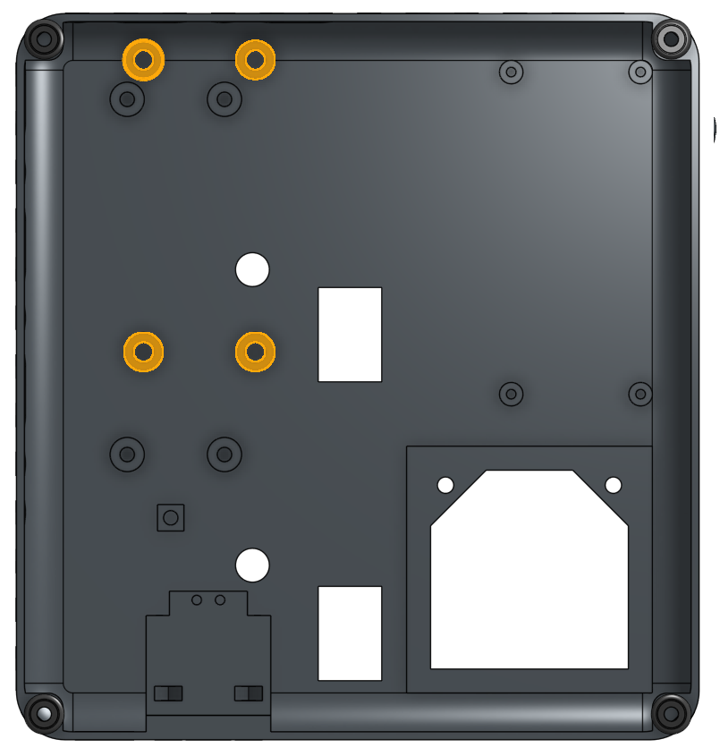
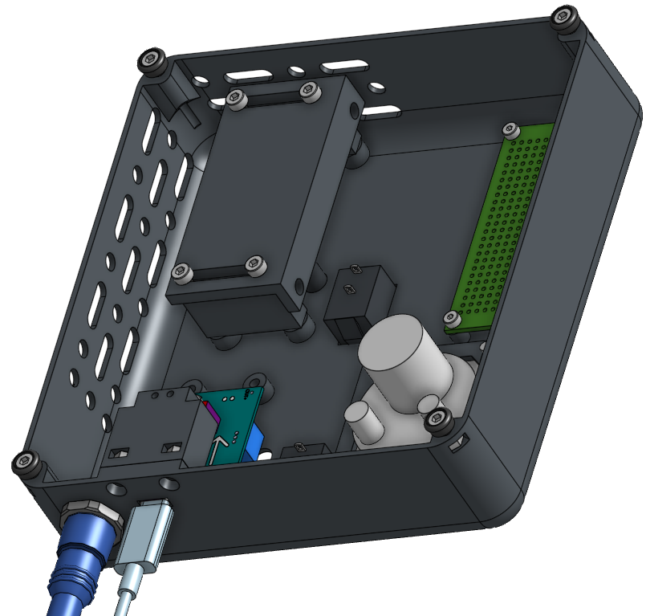
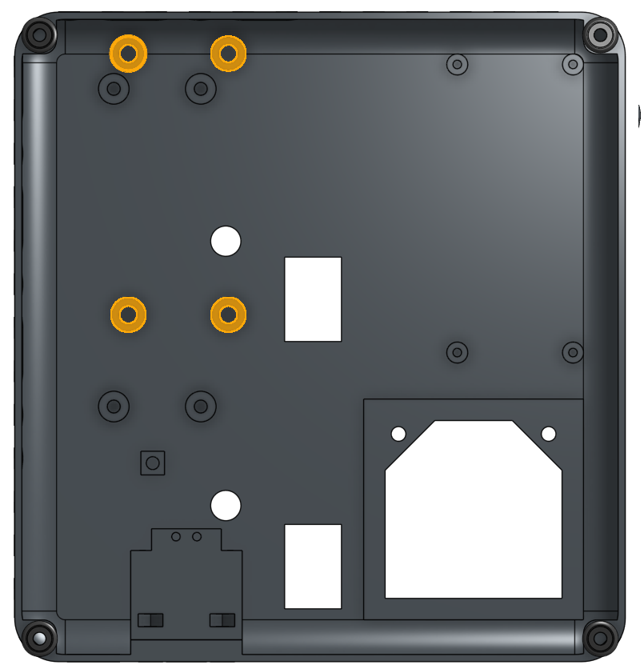
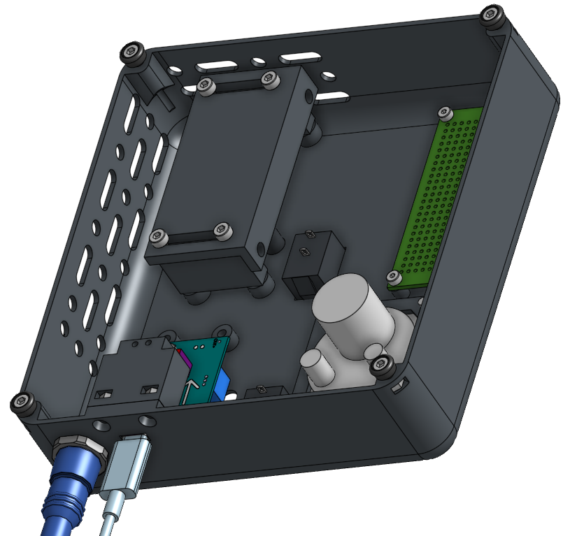

Separators
The separators are designed with the objective of:
1.- Align the central position of the laser driver potentiometer handle with the hole in the panel, leaving the electronic card fixed.
2.- Avoid redesigning the panel that has a printing time of around 8 hours.
Taking the above into consideration, let's take as an example the design of the separator S1 to leave the laser driver Micost driver 500mA fixed in its correct position.
- The first thing to keep in mind is that there are at least 4 holes in the panel that allow you to insert 'heat inserts', whose dimensions are M3x5 mm. The function of these is to fix the spacers next to the laser driver using M3X25 bolts, as can be seen in the following images.
 



The proper way to fix the 'heat inserts' to the panel can be seen in the following video.
- The central distance from the nearest hole with the 'heat insert' to the hole with the potentiometer knob is (x,y)=(0.6,16.9), as can be seen in the following image.


Warning
Consider that the central distance may be different, due to changes in the position of potentiometer the 'laser driver' , for which modifications must be made to the separators, without making changes to the panel design. To redesign the separators, the other 4 perforations can be used and in combination with those with 'heat inserts', as detailed in Step 9: Fixing the laser driver.